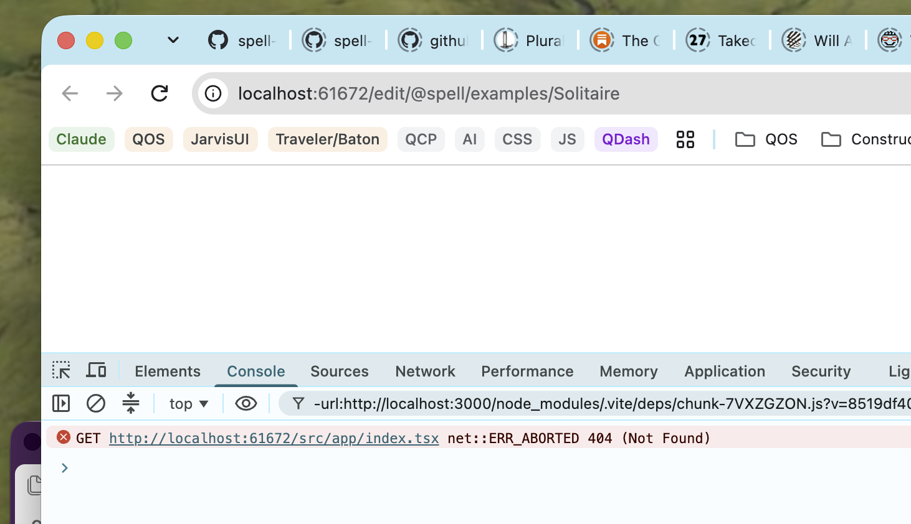

Owen's test run, 2026-10-22 20:48: T4 failed.
Owen: opened a window this time, but no page

Found and fixed in the repo-split worktree, uncommitted.
/src/app/index.tsx, and the editor's dev server said 404.app/ folder.
src/app/ beside it.../src/app/index.tsx, a path that climbs out of the folder. A
browser can't climb above the server's root, so it asks for /src/app/index.tsx, which isn't
there.
import "spell-app/app", in a small inline
script, as every other import in the repo does (J192).
index.html: the script tag
cli.test.ts: the serve test now asks for every script the page loads, and what each imports, as a browser asks. It also
always stops the spell app serve it started: before, a failed check left it running.
app's AGENTS.md: its line about the page's script
node bin/spell.mjs app serve @spell/examples/Solitaire --headless: the
page and its script answer 200, and the app's entry with them.
/src/app/index.tsx, 404. With
the fix, it passes.
yarn ts clean; yarn lint clean, no warnings;
yarn test: 934 passed, 19 skipped, in 93 files (1 skipped), and the 5 Python tests passed. No test
added or removed: the serve test only got more checks. Solitaire's one Python type error is already in its
snapshot, not new.